El Cementerio Estelar: Enanas Blancas, Novas y Supernovas Ia
Qué queda cuando una estrella de baja masa muere: un núcleo desnudo sostenido por pura mecánica cuántica. Por qué una enana blanca más masiva es más pequeña, qué es el límite de Chandrasekhar, y cómo una compañera binaria puede encender novas… o detonar la supernova que sirve de regla para medir el universo.
Una estrella muere cuando agota su combustible nuclear: sin reacciones termonucleares no hay presión de radiación que se oponga a la gravedad. Pero la historia no termina ahí. Del colapso quedan remanentes: enanas blancas, estrellas de neutrones (algunas visibles como púlsares) y agujeros negros, según la masa de la estrella original. Esta clase se concentra en el remanente de las estrellas de baja masa —la enana blanca— y en lo que le puede pasar cuando no está sola: si tiene una compañera que le dona material, puede encender novas recurrentes o, si supera una masa crítica de 1,4 masas solares, destruirse por completo en una supernova tipo Ia, la “candela estándar” con la que se midió la expansión acelerada del universo.
El cementerio estelar: ¿qué queda cuando muere una estrella?
Remanentes: enanas blancas, estrellas de neutrones, púlsares, magnetares, agujeros negros.
Las clases anteriores del módulo cubrieron la evolución y muerte de estrellas de baja masa (con la propia profesora) y de alta masa (con la profesora Laura). La pregunta de hoy es la que sigue naturalmente: ¿queda algo después? Sí: el universo está poblado de remanentes estelares, lo que queda de las estrellas cuando ya no pueden generar energía fusionando elementos livianos en pesados.
- Enana blanca — remanente de estrellas de baja masa (el tema central de hoy), a menudo rodeada por su nebulosa planetaria.
- Estrella de neutrones — remanente de estrellas masivas. Todos los púlsares son estrellas de neutrones, pero no todas las estrellas de neutrones son púlsares: la diferencia no es física, sino de orientación — solo vemos púlsar si el haz de radiación barre nuestra línea de visión.
- Magnetar — un tipo particular de estrella de neutrones con campos magnéticos muchísimo más intensos (y rotaciones y rangos de masa distintos).
- Agujero negro — remanente de las estrellas más masivas.
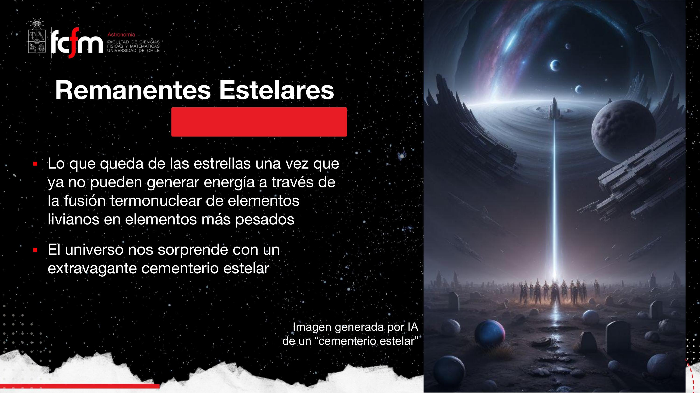
El destino final de una estrella depende principalmente de su masa — el mismo parámetro que dominó toda su vida (luminosidad, temperatura, duración). Estrellas desde ~1 hasta ~5–7 M☉ (rozando las 8) terminan como enanas blancas; las más masivas dejan estrellas de neutrones o agujeros negros.
La enana blanca: el núcleo desnudo de una estrella
Una masa solar comprimida al tamaño de la Tierra, enfriándose por los siglos de los siglos.
Una enana blanca es el núcleo expuesto, inerte y compacto de una estrella de baja masa. La estrella expulsó sus capas externas (la nebulosa planetaria) y quedó solo el “corazón”: un núcleo de carbono, con algo de oxígeno, donde ya no ocurre ninguna reacción termonuclear. Su única actividad es irradiar el calor residual de su vida anterior: se enfría lentamente durante miles de millones de años.
Cuesta no decirle “estrella”, pero en rigor la enana blanca no es una estrella: es una estrella muerta, un remanente. Tampoco es un sólido: sigue siendo un plasma (átomos ionizados: núcleos de C y O más electrones libres), con corrientes eléctricas intensas y campos magnéticos — pero un plasma tan comprimido que la materia “se porta rara” y rigen las leyes de la mecánica cuántica.
La trayectoria final en el diagrama HR
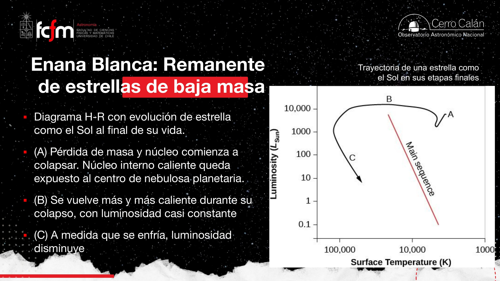
Números que conviene retener
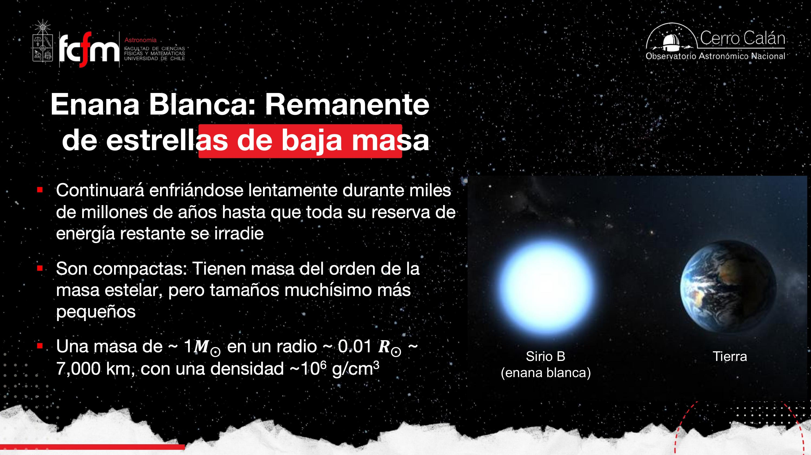
Cuando una enana blanca termine de enfriarse quedará una enana negra: una esfera oscura de masa estelar que ya no brilla. Son objetos hipotéticos: el tiempo de enfriamiento es tan largo que la edad del universo no alcanza para que ninguna se haya apagado del todo. Se han propuesto como candidatas a materia oscura (el proyecto MACHO — Massive Compact Halo Object — buscaba objetos compactos en el halo galáctico: enanas negras, estrellas de neutrones “apagadas”, agujeros negros). ¿Cómo detectar algo que no emite luz? Con microlentes gravitacionales: el objeto compacto amplifica temporalmente la luz de una estrella de fondo al pasar frente a ella — la misma técnica con que se detectan planetas y agujeros negros aislados.
El enfriamiento de una enana blanca es un decaimiento lento tipo condensador descargándose: luminosidad decreciente sin fuente interna. Buscar enanas negras es un problema de detección de eventos raros en series temporales: los surveys de microlensing monitorean millones de estrellas esperando la curva de amplificación característica — puro procesamiento de streams con umbrales de disparo.
Presión degenerada de electrones
Si no genera energía, ¿por qué no colapsa? Mecánica cuántica al rescate.
Aquí está la pregunta central de la clase: la enana blanca tiene ~1 M☉ de gravedad apretando hacia adentro y cero generación de energía empujando hacia afuera. ¿Por qué no colapsa? La respuesta: la presión degenerada de electrones.
Primero, recordar qué es la presión: la resistencia de un gas a ser comprimido, generada por el movimiento de sus partículas (piensa en el émbolo de una jeringa tapada). En un gas ordinario ese movimiento es térmico: más temperatura ⇒ partículas más rápidas ⇒ más presión (ley de los gases ideales). Pero aquí eso no basta.
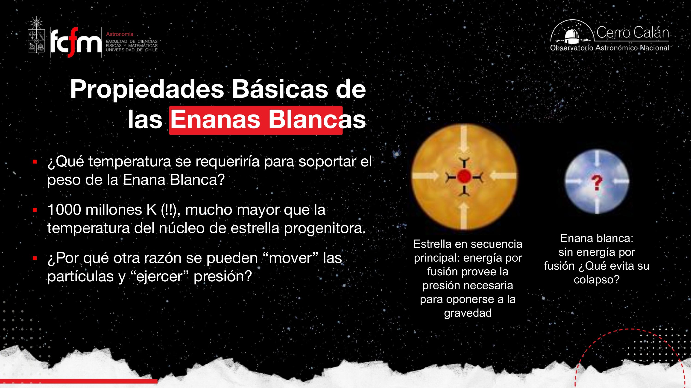
Materia degenerada: cuando manda la cuántica
Al contraerse el núcleo, la densidad sube tanto que la materia se degenera: dejan de valer las reglas de la materia “común y silvestre” y aparecen los principios cuánticos:
- Principio de exclusión de Pauli: dos electrones no pueden ocupar el mismo estado cuántico — la analogía de la clase: la pelea por los estacionamientos del mall en Navidad. Cada electrón exige su “casillero”.
- Principio de incertidumbre de Heisenberg: no puedo conocer con precisión arbitraria la posición y el momentum de una partícula a la vez. Ojo: no habla de los valores, sino de las incertezas (los “± tanto”, como el error de una medición): . Si confino mucho a los electrones (Δx pequeño), su momentum se dispara (Δp grande).
Si la densidad de partículas es , cada electrón dispone de un volumen ~, así que su “espacio propio” mide (lado de un cubito de volumen 1/n). Heisenberg da entonces : apretar los electrones los obliga a moverse, sin importar la temperatura. Ese movimiento forzado es el que genera la presión.
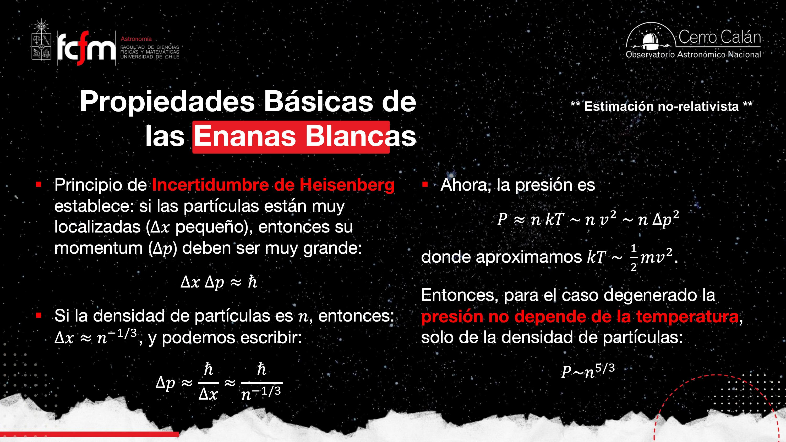
El razonamiento por proporcionalidades (descartar constantes, quedarse con los exponentes) es análisis dimensional: la misma lógica del análisis asintótico — no importa la constante de tu O(n log n), importa el exponente. Aquí el “algoritmo” del gas cambia de complejidad: de P ∝ n·T (ideal) a P ∝ n5/3 (degenerado), y el término T simplemente desaparece de la ecuación de estado.
En materia degenerada asoman otros fenómenos cuánticos, como el efecto túnel: una partícula puede atravesar una barrera clásicamente imposible con probabilidad no nula (si golpearas una mesa por tiempos cósmicos, alguna vez tu mano la “atravesaría”). Y el chiste de la clase: el principio es de Heisenberg — vean Breaking Bad para no olvidar el apellido.
Relación masa-radio y el límite de Chandrasekhar
Más masa ⇒ más pequeña. Y un tope absoluto: 1,4 masas solares.
Consecuencia directa de que (y no de la temperatura): si comparo dos enanas blancas —ojo, objetos distintos, no una que engorda— la de mayor masa es más pequeña. Completamente contraintuitivo: uno esperaría que más materia ocupe más volumen.
Más masa ⇒ más gravedad tratando de colapsar el objeto ⇒ los electrones necesitan generar más presión para sostenerlo. Pero la única forma de subir la presión degenerada es subir la densidad, es decir, apretarse más: los electrones libres se juntan “uno al ladito del otro” formando una especie de barrera. El objeto entero se contrae. Y todo esto ocurre sin aumentar la temperatura ni el tamaño — al revés: el tamaño baja.
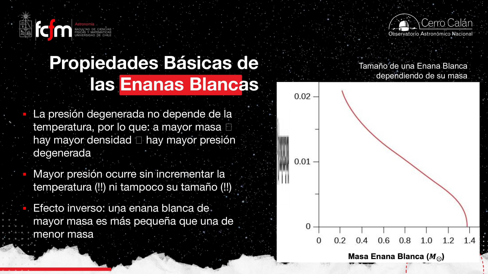
El número que hay que tatuarse: 1,4 M☉
La curva toca radio cero justo antes de 1,4 masas solares: el límite de Chandrasekhar, la masa máxima posible de una enana blanca. Al acercarse a ese valor, los electrones tendrían que moverse a la velocidad de la luz para generar la presión necesaria — un límite físico infranqueable. Por más que se aprieten, ya no pueden sostener el peso: el objeto colapsa.
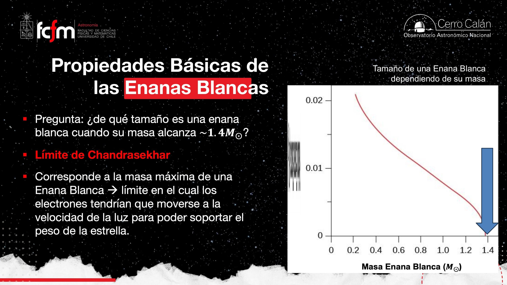
De todas las enanas blancas encontradas en sistemas binarios (donde se puede medir masa con las leyes de Kepler), todas tienen masa < 1,4 M☉. La teoría cuántica y la observación coinciden.
El límite de Chandrasekhar funciona como una condición de overflow con hard limit físico: puedes seguir sumando masa y el sistema se auto-ajusta (comprimiéndose) hasta que la variable de soporte —velocidad de los electrones— satura en su valor máximo permitido, c. Un paso más allá y el sistema no degrada: colapsa catastróficamente. Saturación sin manejo de excepción.
Cómo pesar una enana blanca: Sirio B
Sistemas binarios + leyes de Kepler + observar en la longitud de onda correcta.
¿Cómo se mide la masa de objetos tan pequeños y tenues? La respuesta favorita de los astrónomos: sistemas binarios. Si la enana blanca orbita con una compañera, las leyes de Kepler aplicadas a la órbita entregan las masas de ambas componentes. Así se construyó la evidencia de que ninguna supera 1,4 M☉.
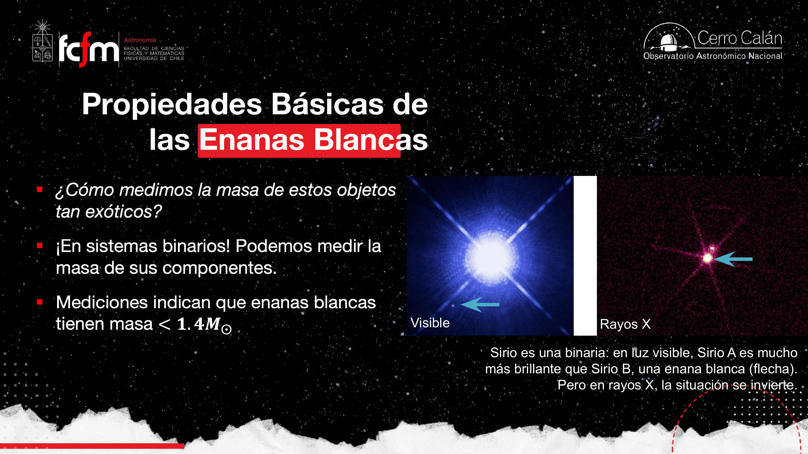
Visible vs. rayos X es el mismo dataset observado por dos canales de medición con sensibilidades opuestas. Igual que en monitoreo de sistemas: el proceso que satura la CPU no es necesariamente el que llena el disco. Elegir la banda correcta = elegir la métrica correcta para el objeto que buscas.
Sistemas binarios y el lóbulo de Roche
Más de la mitad de las estrellas viven acompañadas — y eso cambia su evolución.
Hasta ahora la evolución estelar se contó para estrellas solitarias. Pero por estadística, más de la mitad de las estrellas pertenecen a sistemas múltiples (de dos o más; hay hasta un sistema séptuple con planeta). Buena parte de esa estadística viene del satélite Gaia, que midió posiciones y movimientos de miles de millones de estrellas con precisión extrema. Curiosamente, el Sol está solo — aunque se cree que no nació solo: proyectos de “filogenia galáctica” buscan a sus hermanas, estrellas formadas en la misma nube.
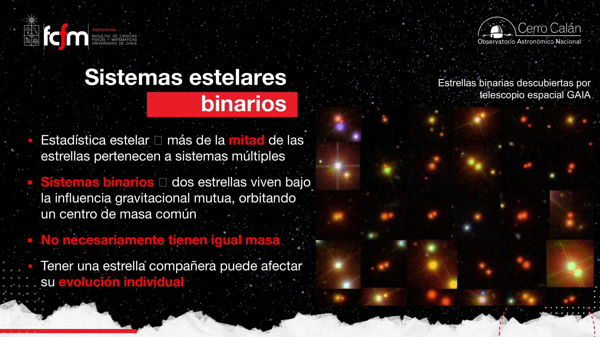
Evolución en binarios: la más masiva parte primero
Regla clave del módulo: a mayor masa, evolución más rápida. En un binario de masas distintas, la componente primaria (por definición, la más masiva) sale antes de la secuencia principal, pasa a gigante roja y muere primero. Si la separación es suficientemente pequeña (aun así hablamos de varias unidades astronómicas), las estrellas pueden intercambiar material: por vientos estelares capturados, o directamente cuando una se infla como gigante y “alcanza” a la otra. Aparecen una estrella donante (pierde masa) y una receptora (gana masa).
El lóbulo de Roche: la frontera de pertenencia gravitacional
Para una partícula en la vecindad de una binaria actúan la gravedad de ambas estrellas más la fuerza centrífuga del movimiento orbital. Las superficies equipotenciales resultantes son esféricas cerca de cada estrella y se van alargando (forma de gota) al alejarse. La equipotencial crítica pasa por el punto de Lagrange L1 entre ambas estrellas y forma dos lóbulos en forma de 8: los lóbulos de Roche.
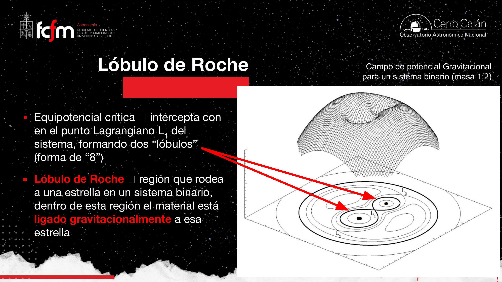
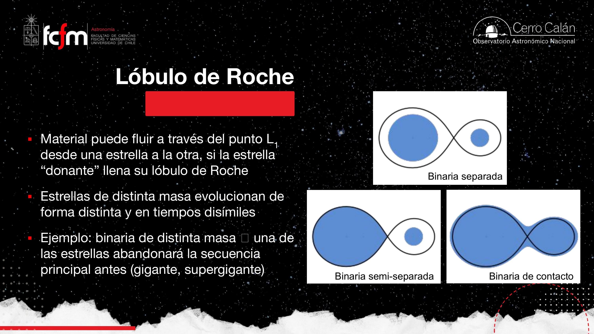
El lóbulo de Roche es literalmente una cuenca de atracción (basin of attraction) de un sistema dinámico: cada punto del espacio “pertenece” al atractor cuya cuenca lo contiene, y la separatriz pasa por el punto silla (L1). Es el mismo dibujo que el análisis de estabilidad de sistemas no lineales: nodos estables, punto silla, separatrices.
Discos de acreción y novas
El material no cae directo: espiralea, se calienta por fricción y enciende fusión superficial.
Escenario concreto (¡el interesante!): la primaria ya murió y es una enana blanca; ahora la secundaria evoluciona a gigante roja, llena su lóbulo de Roche y empieza a donarle material —rico en hidrógeno, porque viene de sus capas externas— a la enana blanca. Es la única forma de que una enana blanca gane masa: las solitarias conservan su masa durante todo su enfriamiento.
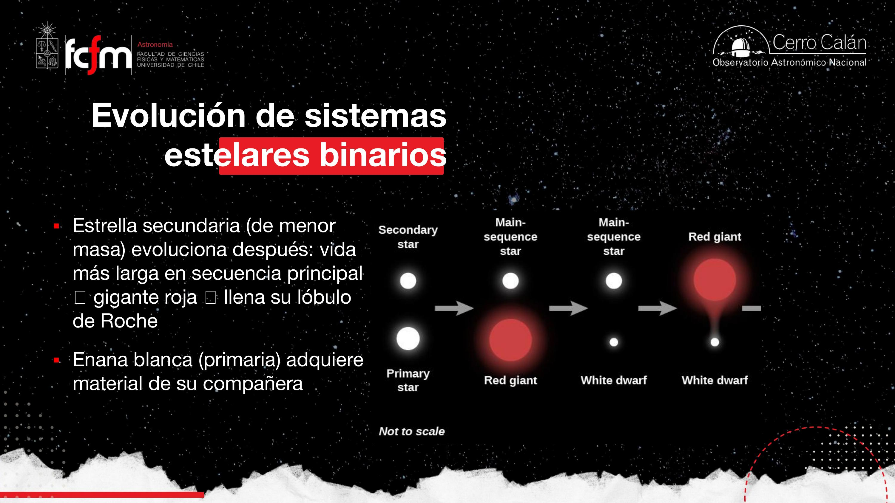
El disco de acreción: conservación de momento angular
El sistema gira, y el universo conserva el momento angular. Por eso el material transferido no puede caer directo sobre la enana blanca: entra en espiral formando un disco de acreción que gira rápidamente a su alrededor — el mismo mecanismo de los discos alrededor de agujeros negros. En el disco aparece fricción (los gases internos orbitan más rápido), que calienta el disco y aumenta su luminosidad; esa misma fricción va disipando momento angular de las regiones internas, y solo entonces el material puede finalmente caer a la superficie.
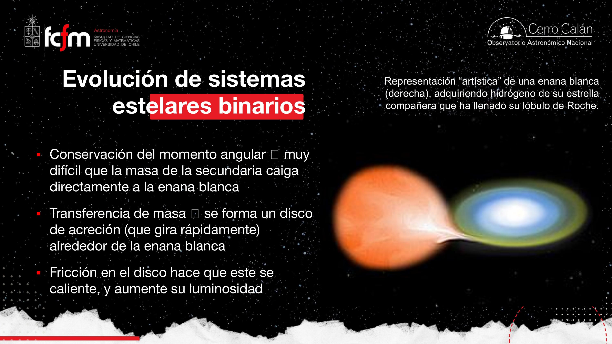
Nova: fusión en un cascarón superficial
Sobre la superficie de la enana blanca se va acumulando una capa de hidrógeno — sobre un núcleo que es puro carbono y oxígeno. Con las temperaturas altísimas de la superficie y del disco, ese hidrógeno puede alcanzar condiciones de fusión H → He: un encendido breve pero muy energético. Eso es una nova (“estrella nueva”: aparece brillo donde no se veía nada).
- La luminosidad sube 100 a 1.000 veces de forma repentina y se desvanece en meses (a veces años).
- Expulsa buena parte del gas recibido; el sistema se “reordena” y la acreción continúa ⇒ las novas pueden ser recurrentes (cuasi-periódicas: el periodo baila porque la caída de material no es perfectamente regular).
- La enana blanca queda intacta: la fusión ocurre a nivel superficial, no la destruye.
- No es una explosión única tipo “pum”, sino un encendido que se apaga y puede repetirse mientras siga cayendo material.
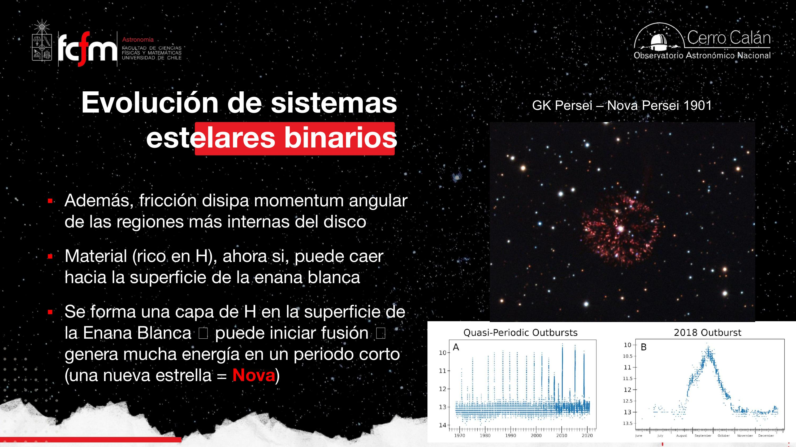
Una nova recurrente es un oscilador de relajación: integras masa de hidrógeno (variable de estado) hasta cruzar un umbral de ignición, descargas en un burst, y vuelves a integrar. Igual que un watchdog que acumula eventos y dispara al llegar al límite. Que sea cuasi-periódica refleja que la tasa de entrada (acreción) es ruidosa: umbral fijo + entrada estocástica ⇒ periodo con jitter.
Supernovas tipo Ia: la muerte definitiva y las candelas estándar
Si la acreción empuja a la enana blanca sobre 1,4 M☉, colapsa y se destruye por completo.
Ahora conectamos todo. Si la enana blanca recibe material demasiado rápido (una tasa de acreción tan alta que no alcanza a “desahogarse” con novas), su masa puede acercarse al límite de Chandrasekhar. Al superarlo, la presión degenerada de electrones ya no puede sostener el peso y la estrella colapsa y explota: una supernova tipo Ia.
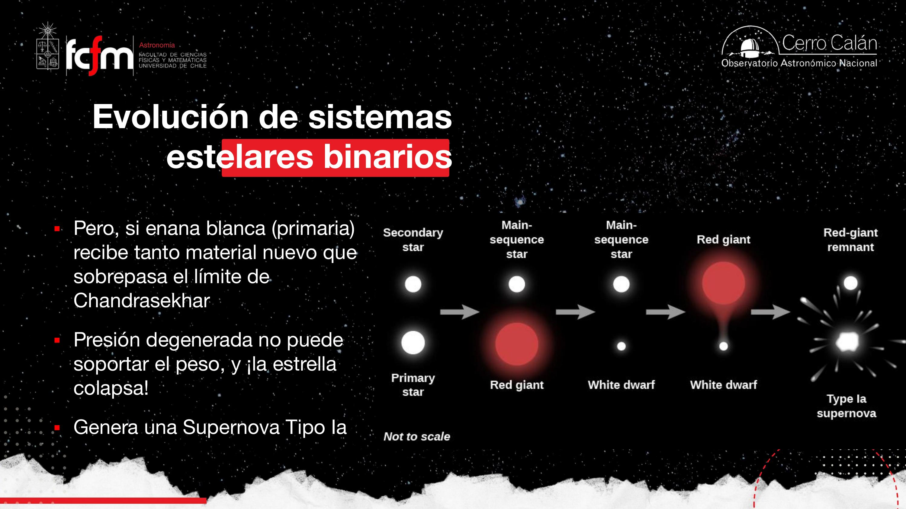
A diferencia de la supernova de una estrella masiva (que deja estrella de neutrones o agujero negro), la SN Ia no deja objeto central: nace desde un remanente y lo aniquila. Solo quedan los gases expandiéndose a velocidades enormes.
Por qué son candelas estándar
Todas las SN Ia tienen el mismo origen físico: una enana blanca que explota justo al alcanzar ~1,4 M☉. Misma masa ⇒ misma energía ⇒ misma curva de luz y misma luminosidad intrínseca. Eso las convierte en candelas estándar: comparando el brillo intrínseco conocido con el brillo observado se obtiene la distancia — incluso a otras galaxias, porque una SN Ia puede brillar más que su galaxia anfitriona completa.
Los astrónomos chilenos José Maza y Mario Hamuy fueron pioneros en calibrar las SN Ia como regla de medición de distancias (proyecto Calán/Tololo). Equipos internacionales usaron luego ese método para descubrir que la expansión del universo se acelera — hallazgo que recibió el Premio Nobel de Física (2011). Búscalo: las fotos “antes/después” de galaxias con supernova impresionan — aparece un punto que rivaliza con la galaxia entera.
La firma espectral: sin hidrógeno, con silicio
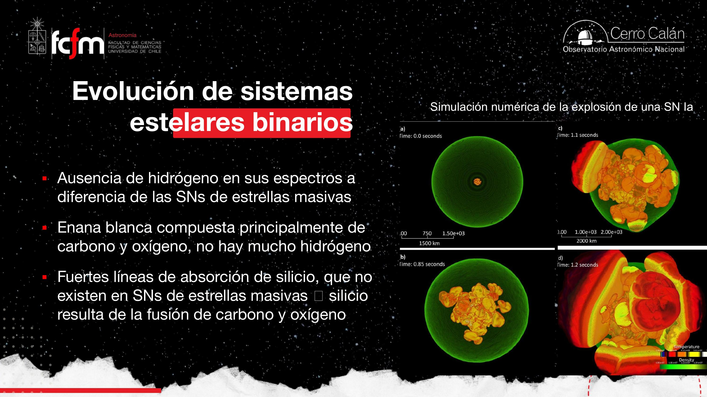
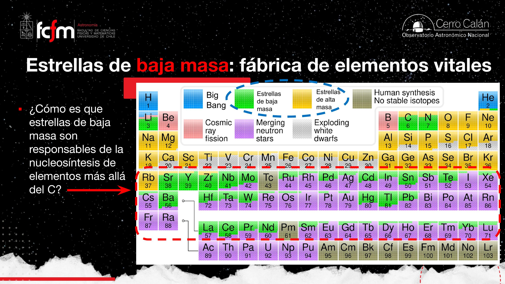
Las candelas estándar son la calibración de sensores perfecta: si todas las fuentes emiten con la misma potencia conocida, la atenuación observada (ley del inverso del cuadrado) te da la distancia — igual que estimar distancia por RSSI con transmisores de potencia fija. El descubrimiento de la expansión acelerada fue, en el fondo, detectar un desvío sistemático entre el modelo (universo desacelerando) y los residuos de los datos.
Nova vs. supernova, y el zoológico de binarias
Dos fenómenos con nombre parecido y física muy distinta — y un universo de caminos posibles.
| Nova | Supernova tipo Ia | |
|---|---|---|
| Qué ocurre | Fusión de H → He en un cascarón superficial acumulado sobre la enana blanca | Explosión completa del objeto al superar el límite de Chandrasekhar |
| La enana blanca | Queda intacta; puede repetir el ciclo | Se destruye por completo, sin dejar remanente |
| Luminosidad | Sube ×100–1.000 sobre su nivel basal | ~10⁷ veces (decenas de millones) más luminosa que una nova; puede superar a su galaxia |
| Recurrencia | Sí, cuasi-periódica mientras caiga material | Única e irreversible |
| Requisito | Acreción de H desde compañera | Acreción suficiente para alcanzar 1,4 M☉ |
¿Puede una misma enana blanca tener novas por un tiempo y después terminar en supernova? Sí: si algo cambia en el sistema y la tasa de acreción sube, el objeto puede dejar de estabilizarse con novas y cruzar el límite. En binarias, “todas las posibilidades que se te ocurran, existen”.
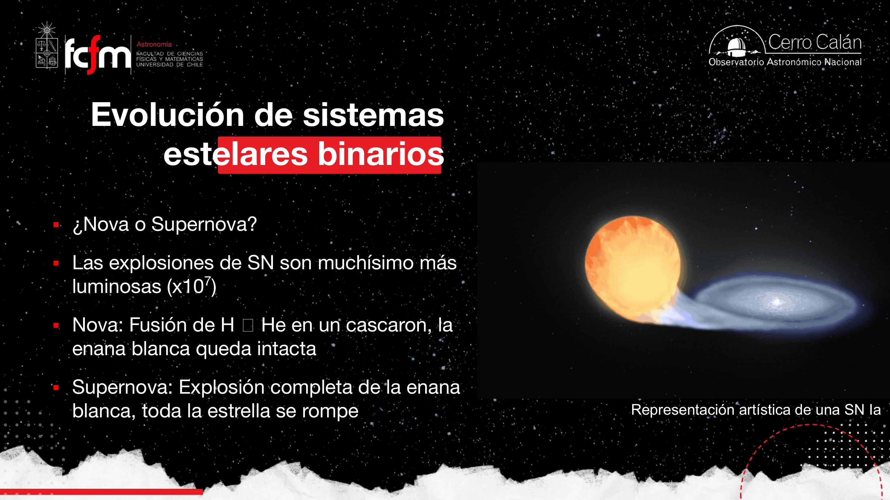
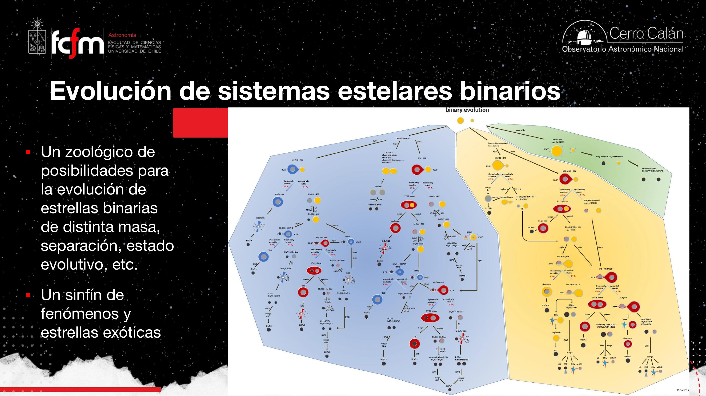
Explorar conceptos
Tres widgets para jugar con la física de la clase.
Conceptos clave
Tabla de repaso rápido.
| Concepto | Qué es / valor | Por qué importa |
|---|---|---|
| Remanente estelar | Lo que queda al agotarse el combustible nuclear | Enana blanca, estrella de neutrones o agujero negro según la masa |
| Enana blanca | Núcleo desnudo de C-O; ~1 M☉ en ~7.000 km; ρ ~ 10⁶ g/cm³ | Remanente de estrellas de hasta ~5–8 M☉; solo se enfría |
| Presión degenerada | Presión cuántica de electrones (Pauli + Heisenberg) | Sostiene a la enana blanca sin generar energía |
| P ∝ n5/3 | Ecuación de estado degenerada (no relativista) | La presión depende de la densidad, no de la temperatura |
| Relación masa-radio | Más masa ⇒ menor radio (R ∝ M−1/3) | Efecto contraintuitivo, exclusivo de la materia degenerada |
| Límite de Chandrasekhar | 1,4 M☉ — masa máxima de una enana blanca | Sobre él, los electrones necesitarían v > c: colapso |
| Enana negra | Enana blanca totalmente enfriada (hipotética) | El universo aún no es lo bastante viejo; candidata MACHO a materia oscura |
| Sistema binario | Dos estrellas ligadas orbitando su centro de masa | >50% de las estrellas; permite medir masas (Kepler) |
| Lóbulo de Roche | Región donde el material está ligado a cada estrella; “8” por L1 | Si una estrella lo llena, transfiere masa a la compañera |
| Disco de acreción | Espiral de material en torno a la enana blanca | Consecuencia de conservar momento angular; se calienta por fricción |
| Nova | Fusión H→He en cascarón superficial; ×100–1.000 en brillo | Recurrente; la enana blanca sobrevive intacta |
| Supernova tipo Ia | Explosión total al superar 1,4 M☉; sin H, con Si en el espectro | Candela estándar: midió la expansión acelerada del universo |
| Candela estándar | Fuente de luminosidad intrínseca conocida | Brillo observado ⇒ distancia (Maza y Hamuy, Calán/Tololo) |
Exámenes de práctica
10 exámenes de 5 preguntas (3 de alternativas autocorregibles + 2 de respuesta escrita).